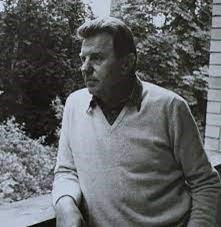

Justinas Marcinkevičius
 Justinas Marcinkevičius (1930 03 - 2011 02 16) - lietuvių rašytojas, vertėjas. Mokėsi Alksniakiemio pradžios mokykloje, vėliau Prienų „Žiburio“ gimnazijoje, kur sukūrė savo pirmuosius kūrinius: parašė poemėles apie Vilniaus krašto išvadavimą iš Lenkų, apie jo kaimo draugų, partizanų, žūtį ir trečiąją mokyklos teatrui apie tuometinį gyvenimą. Iš šių trijų poemėlių, ne viena neišliko. 1948 m. su prokuratūra buvo pradėto mokinių tardymai dėl įtarimų, kad yra susidariusi mokinių grupė propaguojanti laisvės idėjas. Į ta sąrašą pateko ir J. Marcinkevičius. Apieškojus Justiną buvo rasta draudžiama literatūra: Maironis, Kudirka, Maceina. Dėl to Justinas buvo įkalintas Marijampolės kalėjime. Bet po kurio laiko paleistas, nesudarius bylos. 1954 Vilniaus universitete baigė lietuvių kalbą ir literatūrą. Buvo komisijos Lietuvos nepriklausomybės planui parengti kopirmininku. Jis buvo vienas populiariausių 20 a. pabaigos – 21 a. pradžios poetų Lietuvoje. Aktyviai dalyvavo Sąjūdžio veikloje, atkuriant Lietuvos nepriklausomybę. J. Marcinkevičius išleido daugiau nei šimtą knygų: poemų, eilėraščių, dramų, eseistikos, knygų vaikams.
Kūryba
Pagrindinės temos, kuriomis kurdavo Marcinkevičius buvo Lietuva, jos istorija ir dabartis, gamta ir kultūra, žmogus tėvynėje ir pasaulyje. J. Marcinkevičiaus kūrybos ir paties jo asmens populiarumas paskutiniais sovietmečio dešimtmečiais buvo beveik visuotinis, Jo nuopelnai Lietuvai ir literatūrai įvertinti nepriklausomybės metais: 2001 m. poetas apdovanotas Lietuvos nacionaline literatūros ir meno premija, o taip pat ir Baltijos asamblėjos premija. Poetas debiutavo 1955 metais pirmaisiais savo eilėraščių rinkiniais - „Prašau žodžio“, „Duoną raikančios rankos“. Vėliau išleido poemų: Dvidešimtas pavasaris“, „Kraujas ir pelenai“, „Publicistinė poema“, apysaką „Pušis“, „Donelaitis“, „Siena“, „Mediniai tiltai“. „Liepsnojantis krūmas“, „Šešios poemos“, „Pažinimo medis“, „Gyvenimo švelnus prisiglaudimas“, „Būk ir palaimink“, „Vienintelė žemė“, „Už gyvus ir mirusius“, „Eilėraščiai iš dienoraščio“, „Žingsnis“, „Carmina minora“, „Dienos drobulė“, „Amžino rūpesčio pieva“.
Atminimo įamžinimas
Apie Just. Marcinkevičių yra sukurti dokumentiniai filmai: L. Lazėno „Dienoraštis be datų“(1980), S. Beržinio „Lopšinė motinai“ (1983), A. Marcinkevičiūtės „Prie rugių ir prie ugnies“ (2010), S. Birgelio „Poezijos pavasaris 2011: baladė apie poetą Justiną Marcinkevičių“ (2011)“ (2010).
J. Marcinkevičiaus kūrybos galima pasiklausyti LRT mediatekoje.
Galerija